Slayer
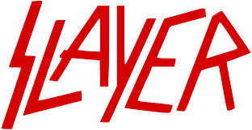
- Year formed - 1981
- Founding members:
- Jeff Hanneman
- Kerry King
- Tom Araya
- Dave Lombardo

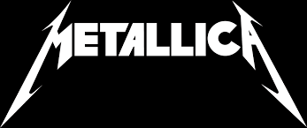
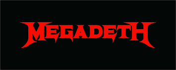
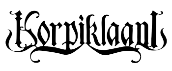
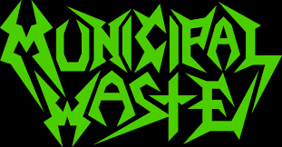
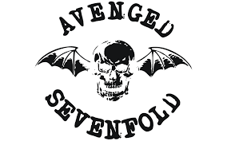
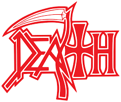
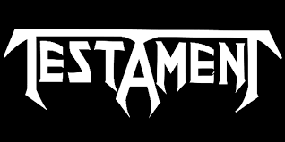
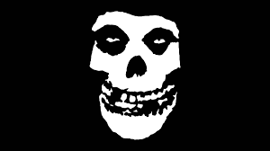
Founding members:
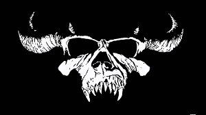
Founding members:
Founding members:
Description: Part of the big 3 of heavy metal, Black Sabbath is an English rock band formed in Birmingham in 1968. They are widely considered pioneers of heavy metal, known for their dark sound, heavy guitar riffs, and themes inspired by horror and the occult. Their early albums helped define the heavy metal genre and influenced countless bands.
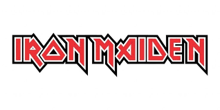
Founding members:
Description: Another part of the big 3 of heavy metal, Iron Maiden is an English heavy metal band formed in London in 1975 by bassist Steve Harris. They became one of the most influential bands of the New Wave of British Heavy Metal (NWOBHM) movement, known for fast guitar riffs, epic songwriting, and their mascot Eddie. Albums like "The Number of the Beast" and "Powerslave" helped establish them as one of the most successful heavy metal bands in history.
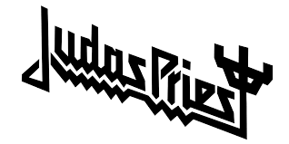
Founding members:
Description: Final part of the big 3 of heavy metal, Judas Priest is an English heavy metal band formed in Birmingham in 1969. They are widely credited with helping shape the sound and image of modern heavy metal, especially through their twin-guitar attack and leather-and-studs aesthetic. With influential albums like "British Steel" and "Screaming for Vengeance," they became one of the most important and enduring bands in the genre.